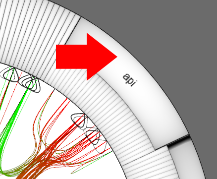
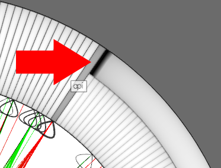

You can collapse packages to get a more high level view of the
interaction in the system and thus to hide details currently out of
interest. This can be done by double clicking on a package.
Collapsed packages are dark gray and can be opened by double
clicking again.

